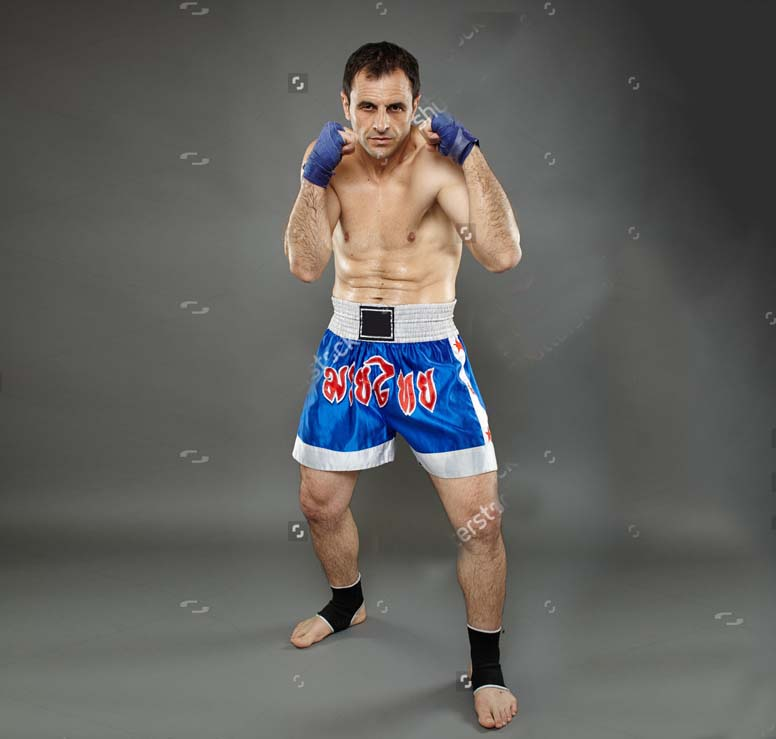
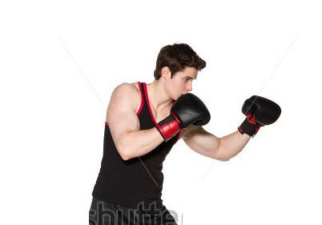
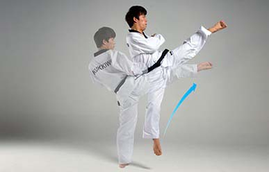

HOW TO LEARN MUAY THAI
[ CHAPTER 1 ]
Muay Thai is an ancient martial arts style that dates back to the 15th century in Thailand. While Muay Thai matches in previous centuries were often brutal fights, the Muay Thai of today is governed by a referee who keeps track of points, and opponents wear protective gear to minimize the harm done to one another. However, Muay Thai is still a fast-paced and potentially-dangerous sport, and properly learning the necessary form and techniques is vital for anyone considering a sparring match.
Part 1 - Stances and Positions
1. Perfect your fighting stance.

The fighting stance is crucial to maintain proper balance during Muay Thai, and a good stance will help you protect yourself from blows while delivering the strongest hits you can to your opponent. Flexibility is important in a good fighting stance, so make sure you've properly warmed up before you begin.
- Spread your feet between hip-width and shoulder-width apart with your knees slightly bent. Keep your more-dextrous/dominant foot slightly behind you so you have more momentum when you kick with that foot.
- Tense up your abdominal muscles a little bit (but not too much). You don't want your abs so tense that it inhibits your breathing or movement, but you'll want to have some tension there in case your opponent hits you in the stomach.
- Keep your dominant hand's fist guarding your face but poised to strike, and hold your non-dominant hand's fist out slightly ahead of you at about the height of your nose.
- Tuck your chin down towards your collarbone and keep it there. This will help protect you somewhat from a broken nose or black eye.
- Move around, and try to change up the rhythm/cadence of your movements periodically. The goal is to make sure your opponent can't predict how you'll move next.
2. Learn how to punch properly.

If you've never had any boxing/fighting experience, you may not know how to properly throw a punch. Good form is necessary, as a sloppy punch could end up hurting you very badly. A well-executed punch should move from the shoulder all the way to the fist as it makes contact.
- Keep a loose fist, but let your hand and arm slightly relax when you're not yet punching. Try to keep your shoulders loose as well.
- When you go in for the strike, tighten up your fist. Make sure your thumb is not wrapped up in your other fingers, or it will likely break when you strike.
- Exhale sharply as you initiate a punch and rotate your torso, such that all of your upper body is moving behind your fist.
- If you're hitting straight on at your opponent, rotate your fist so that it strikes with your knuckles horizontal in relation to your opponent's body (they should be parallel to the floor). If you're going for a side hook, though, it's okay to keep your knuckles vertical.
- Don't overextend your punch, and don't leave yourself open to a counter attack. Withdraw your arm back immediately after you've made contact on the punch to either block an attack or prepare for your next hit.
3. Practice a roundhouse kick.

Roundhouse kicks are an important part of Muay Thai. The fists, knees, and feet are all utilized during combat, so it's important that you work every relevant muscle group and practice your hits extensively.
- Shift your weight to the foot that will remain planted on the ground. Step out at a roughly 45-degree angle as you prepare to initiate the kick, and use your more dextrous foot for the actual maneuver.
- Turn into your target so that you have more inertia behind your kick.
- Angle your shoulder so that it adds additional protection to your face. The last thing you want is for your opponent to get an easy head shot in while you're trying to execute a move.
Part 2 - Developing a Fighting Technique
1. Learn how to spar with an opponent.
Practicing with another person is very different from developing your technique on your own or working on a punching bag. While many students may feel intimidated, though, it's important to remain calm and relaxed. The best way to prepare for a one-on-one sparring match is to focus on the basic moves and remember to keep up your guard against a counter-strike.
- The best times to hit an opponent are when they're punching at you, when they're not expecting it (by changing up your rhythm, for example), or when you're at an angle that would be difficult for your opponent to block.
- Remember to use your non-dominant hand to deliver a short, sharp jab. This sets up the bigger punch with your dominant hand, and it can also confuse or intimidate your opponent.
- Don't emphasize speed, as a fast punch often lacks the body strength behind it that a slower punch can deliver. Work on your form and on delivering the best, most powerful hits you can.
2. Practice some Muay Thai techniques.
There are many techniques within Muay Thai, and mastering them all would take many years. However, even as a beginner you may be able to incorporate some traditional techniques into your training, which you can then develop and build off of.
- Kao Dode (Jumping knee strike) - jump up on one leg, then use that leg's knee to strike your opponent with a direct knee hit.
- Kao Loi (Jumping/Flying knee strike) - take a step forward, begin jumping off of one leg as though you were going to use the knee or foot of that leg, then switch in mid-air to deliver a knee strike with the other leg.
- Kao Tone (Straight knee strike) - hit with the knee straight and upward, ideally in close proximity to your opponent.
- Kao Noi (Small knee strike) - when you're grappling with an opponent in close combat, use your knee to strike the upper thigh (but not the groin) of your opponent to wear him or her down. It can also be used to block a kick or knee strike from your opponent.
3. Combine the various moves.
Combine the various moves to wear down an opponent. In a real combat situation, you'll need to move fast and incorporate a lot of different moves very rapidly. Strength and form should come before speed, but as you advance you can work on becoming a more proficient fighter with faster response times. You should also think of your opponent as a walnut protected by a hard shell. You have to crack through the outside shell (with hits to your opponent's lets and arms) before you can get to the nut (which in this metaphor would mean a direct, close-proximity hit to the head or abdomen).
- Dodging a hit and counterattacking your opponent works well at the beginning of a match, but it can quickly tire you out.
- As you progress through the match, you'll want to spend less time moving around and focus your energy on blocking direct strikes from your opponent, then finding an opening in your opponent's stance.
- Keep moving forward as you spar with your opponent. This puts him or her on the defensive, which can also give you more momentum as you prepare to land a direct hit.
4. Consider working with a professional.
Training on your own is a good start, and sparring with a friend or other workout partner is a good next step. If you're serious about becoming skilled in Muay Thai, though, you may want to work with a trainer who has an extensive background in martial arts. A trainer can help you find your own weaknesses/vulnerabilities, perfect your technique, and take your training to the next level.
- You can find Muay Thai trainers and gyms in your area by searching online or by checking a local phone book.
- Remember that becoming proficient in Muay Thai takes time, just like any other learned skill. Be patient, and if you decide to work with a trainer, follow his/her training advice on how to improve your stance, technique, and form.
Part 3 - Warming Up
1. Stretch your muscles.
Stretching is important before engaging in any type of physical activity. Martial arts require limber muscles and joints, as it's very easy to pull or strain a muscle if you're not careful. Spend at least 10 minutes stretching every major muscle group that you'll be using that day before moving on to any other warm up routines.
- Try a rotating stomach stretch. Lie face-down, keep your hips on the ground, and lift yourself by straightening your arms before rotating one shoulder (then the other) towards the floor.
- Stretch your hamstrings by planting one foot on the floor and one foot flat on a table or other elevated piece of furniture. Bend your knee and slowly lower your chest to that knee before switching sides.
- Another hamstring stretch involves planting your feet shoulder-width apart and bending over towards the floor without bending your knees. Hold the stretch for 10 seconds, and repeat the stretch three to five times to maximize your flexibility.
- Stretch your adductor by keeping one foot planted (with toes pointed forward) and bending the other leg (with toes pointed outwards, away from you). Lower your body down and slowly stretch your groin muscles before switching sides.
2. Loosen up your joints.
Your joints will play a key role in your flexibility during Muay Thai. You'll need to be able to move fluidly, which can be difficult if your joints are stiff or locked up. By warming up your joints, you'll be more flexible and limber during your training sessions and any subsequent sparring matches.
- Warm up your knees by squatting down, holding your knee caps, and rotating them in circles. Aim for 20 to 30 rotations, changing direction mid-way through.
- Work your ankles by standing on the ball of one foot with your heel elevated and rotating the ankle between 10 to 20 times. Then switch to the other side.
- Loosen up your hips by standing shoulder-width apart with your hands on your waist. Twist your hips in one direction 10 times, then switch to the other direction.
- Work your neck by moving your chin up and down, then side to side. Move slowly and aim for about 10 to 20 repetitions for each direction.
3. Engage in a cardiovascular workout.
Muay Thai and other martial arts require fast, strong movements. One of the best ways to train for Muay Thai, including pre-session warmups, is a good cardio workout regimen. There are many ways to elevate your heart rate and increase your respiration, so try a few different routines and find one that works for you..
- Jumping rope is an excellent form of cardio exercise. Aim for two rounds of intense, fast-paced jumping that last about three minutes each (six minutes total).
- Go for a run or sprint. You can do a longer run (around five kilometers) to burn calories and maximize your workout, or do 5 to 10 rounds of short sprints across 50 to 100 meters.
- Try swimming laps if you have access to a pool. Swimming works all the major muscle groups and is an excellent form of cardio exercise.
4. Shadow box.
Shadow boxing is a great warm-up routine that helps you practice your rhythm/cadence, which you'll need for an actual match. Aim to shadow box for three rounds at three minutes each (for a total of about nine minutes), and if possible try to do it in front of a mirror so you can check your form. Just make sure you have enough room on all sides of you so you don't injure yourself or anyone else.
- Start in your fighting stance, with your feet shoulder-width apart and your weight equally balanced across both feet. Stand on the balls of your feet and keep your knees aligned with the direction each foot is pointed.
- Keep your dominant hand's fist close to your face, level with your jaw or cheekbone, and place your other fist out slightly ahead of you. Keep the elbows bent and just slightly turned outward away from your body.
- Practice hopping around front-to-back and side-to-side. Throw punches, elbows, and knee hits, and try to maintain your balance and weight distribution across both feet.
5. Follow & Read these Instructions all the time, over and over again.
The best way to win a fight is by doing the following:
- Follow & Read these Instructions all the time, over and over again.
- And Also, Rate this App with a happy comment at Google Play Store to support this App. (Do it now by clicking on the Rate button below, then scroll down at Google Play Store & click on the stars to rate!).
III> CHAPTER 2
[+] SIMILAR APPS
GO HOME

 +233-0547999998
+233-0547999998  More Apps
More Apps